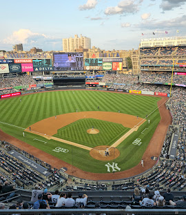

Yankee Stadium

Whether you are looking to take in our storied history at Monument Park or catch the baseball action on New York's biggest stage, a trip to Yankee Stadium is an experience you'll never forget.
The Stadium is just a 25-minute subway or taxi ride away from Midtown Manhattan. Come enjoy the action, passion, excitement. Get your tickets today!